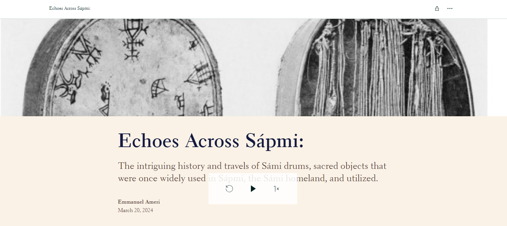

Research Projects
Implications of Monetary Policy on Fiscal Policy

Description of the project...
View on GitHub: GitHub Link
🔧 Featured Research Projects
Non-Research Projects
Sum of Powers Final Project

Description of the project...
View on GitHub: GitHub Link
🌟 Featured Independent and Collaborative Research Projects
Echoes of Sápmi
Summary of Echoes Across Sápmi
Overview:
"Echoes Across Sápmi" explores the historical significance and journeys of Sámi drums, sacred objects integral to Sámi culture and spirituality. The author, Emmanuel Ameri, aims to uncover the socio-cultural and historical contexts surrounding these drums, which were used by noaidis (Sámi religious leaders) for healing, divination, and community harmony.
Key Themes:
1. Cultural Significance of Sámi Drums:
- Drums were vital in Sámi spirituality and community life.
- They served as a connection to ancient traditions and history.
2. Historical Displacement:
- Many Sámi drums were taken during colonial times and are now housed in European museums, often disconnected from their cultural context.
- Notable examples include a drum presented to the British Museum and another confiscated during witch hunts in Norway.
3. Calls for Repatriation:
- Thousands of Sámi objects, including sacred drums, are scattered across museums, lacking proper documentation.
- Recent efforts have been made to repatriate these items and foster cooperation between Sámi and European museums.
4. Resilience and Cultural Revival:
- The journey of a seventeenth-century Sámi drum illustrates the resilience of Sámi culture.
- Contemporary Sámi artisans, like Helge Sunna and Gunvor Guttorm, are revitalizing traditional craftsmanship, showcasing the enduring spirit of Sámi identity.
5. Historical Context of Drum Dispersal:
- The Museum Schefferianum in Uppsala was one of the first museums to collect Sámi artifacts, including drums, which were later dispersed to royal collections and museums across Europe.
- The narrative includes the journey of the Freavnantjahke gievrie drum, highlighting its significance and the impact of colonialism on Sámi culture.
6. Conclusion:
The journey of Sámi drums reflects the complex interplay of history, identity, and cultural heritage. The author emphasizes the importance of preserving indigenous cultures and fostering respect and cooperation between communities and museums.
Credits:
The work cites various sources, including museums, academic references, and historical accounts, to support its exploration of Sámi cultural heritage and the significance of repatriation efforts.
